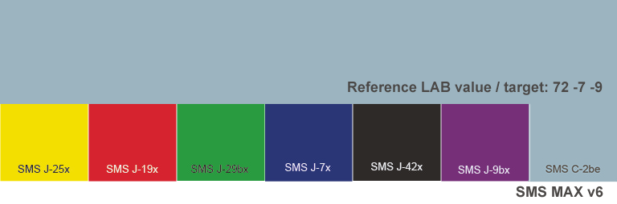
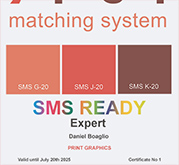
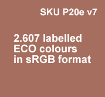
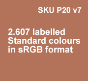
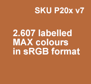
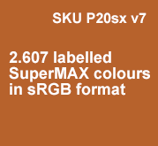

Shop SMS SMS Technical SMS products & services SMS in articles and webinars Testimonies
SMS and the environment SMS news SMS READY Experts Interesting links SMS: How, why and when SMS Q&A
SMS for design and
advertising Getting started with SMS colours SMS BLOCKS Cost of ownership |
SMS for print Printers (in all categories) SMS READY - or not? |
SMS subscription and SMS READY certification plans (bottom of this page)
SKU P40 SMS subscription plan for brand owners (from small businesses to big brands)
SKU P43 SMS READY certification for design agencies
SKU P45: SMS READY certification for print shops
SMS READY certification for manufacturers
SMS Products and Services
SMS READY control strips (free of charge)
For instructions on how to use SMS colours in your design take a few minutes to study www.spotmatchingsystem.com/gettingstarted.
For an overview of the differences between our 6 SMS colour palettes see an overview of supported icc profiles for each version here.
For step-by-step instructions on how to use SMS colours in professional design, on how to convert your chosen SMS colours from sRGB to CMYK or Pantone, please check out our video instructions for Adobe Photoshop and Affinity here. More design details are also available here.
You are welcome to download the free SMS READY control strips here below to familiarize yourself with SMS colours, including doing the step-by-step training with your own design app.
If you wish to download our SMS READY control strips - either the
standard size (see here below) or the mini version (without the large
blue/gray on top) you can download them in sRGB format
here
along with instructions on how to convert the control strip to your
destination CMYK gamut.
SMS Standard colours, sRGB format

The SMS Standard colours are natural colours, suited for web, TV and CMYK printing on both white coated and uncoated paper, web and TV and are hence quite practical for most brands. For instance our own SMS logo is created with the Standard v6 colours.
The SMS Standard Home & Office colours are Standard colours with a slightly surpressed colour gamut suited for online viewing on laptop displays that only cover approx. 60% of the sRGB colour gamut/45% of the NTSC colour gamut. Many PC laptops make do with this colour gamut and the idea here is to maximize the number of customers around the world that can in fact see brand colours selected from this palette on their inexpensive PC laptops. See for instance the P60 laptop available from Spot-Nordic - here.
Version 7 of the Spot Matching System nota bene contains all the 1.738 colours of v6 plus 869 new colours.
SMS ECO (e) colours, sRGB format

The ECO colours are the earthy/super natural version of our palette made especially for printing on off-white, uncoated paper, web and TV. These colours are very appropriate for environmentally concious customers.
We call it ECO because many Eco friendly papers are simply a bit
off-white, recycled paper especially and from an artistic point of view,
they are earthy shades.
A nice advantage to using the ECO colours in your design or as brand
colours for your customers is that they can also be printed perfectly
correctly in your local newspaper - according to ISO 12647-3-2013 - to
WAN-IFRA standards, which is the universal standard for CMYK printing of
newspapers.
To be clear, all the ECO colours can also be printed on bright white or neutral white paper like other SMS colours. These colours simply cover any media from newspaper to neutral white to bright white paper, web and TV, while other SMS colours are optimized for neutral white substrates, so if you need to print, say, an SMS Standard colour in your local newspaper, you have to accept that it will change visually depending on how white or how brown/gray the paper in your local newspaper actually is.
SMS MAX (x) colours, sRGB format

The SMS MAX colours are suited for CMYK printing on white, coated substrates, web and TV.
These colours are more vivid than our natural Standard or
ECO colours but the cost of that is that they can by default
not be achieved in printing on uncoated
paper.
The SMS MAX colours are thus well suited for packaging applications,
outdoor signage, magazine ads, web and TV but perhaps not as well suited
for general brand design, where uncoated paper may be a part of what is
required in the mix.
The SMS MAX Home & Office colours are MAX colours with a slightly surpressed colour gamut suited for online viewing on laptop displays that only cover approx. 60% of the sRGB colour gamut/45% of the NTSC colour gamut. Many PC laptops make do with this colour gamut and the idea here is to maximize the number of customers around the world that can in fact see brand colours selected from this palette on their inexpensive PC laptops. See for instance the P60 laptop available from Spot-Nordic - here.
SMS SuperMAX (sx) colours, sRGB format

The SMS SuperMAX colours are suited for Extended Gamut printing on white, coated substrates, web and TV.
These colours are super vivid and are optimized for FOGRA59, CRPC7,
XCMYK or CMYKOGV printing on coated, white substrates.
The SMS MAX colours are thus well suited for packaging applications,
web design and TV graphics but are not practical
for general brand design, where uncoated paper may be a part of what is
required in the mix and also due to the fact that these colours cannot
be printed in any print shop.
SMS brand colour tickets (digital or hardproof)

SKU: P6d: Digital brand colour ticket showing your SMS colours in sRGB format. Delivered in low resolution PNG format (for passing out to anyone responsible for reproduction of your SMS brand colours) and high resolution PDF format, enabling the brand owner to convert the PDF from sRGB to a destination CMYK colour space and then have their brand colour tickets printed by a qualified proofing facility, capable of delivering SMS colours, preferably within a dE00 of no more than 2 for acceptable visual outcome from the proof.
Price: EUR 60
SKU: P6c or P6u: ISO
certified proof according to ISO 12647-7-2016 with customer's
SMS colour tickets for sending out for quality control during production,
8 tickets pr. A4+, 16 tickets pr. A3+, 32 tickets pr. A2+.
We recommend
attaching each colour ticket to a job description for your
print shop/manufacturer, describing where in your layout your SMS
colours are
to be found (Example: "Logos on pages 1, 5, 7 and 29, product images
on pages 1, 6, 7 and 19").
This is especially important in the case where your SMS
colours are printed in CMYK, since they become a part of your CMYK layout
and thus you need to pinpoint them if you want the printer/press operator to
pay attention to ensure that your SMS colours are printed correctly from
beginning to the end of production.
or
SKU: P7c or P7u: ISO certified proof according to ISO 12647-7-2016 with colour samples of your logo / logos and other brand related artwork.
Intended for professional agency promotions of new design / new visual brand identity proposals primarily.
Perfect as a part of a printed brand standard for production partners.
Design by advertising agency / designer.
or
SKU: P8c or P8u: ISO certified
proof according to ISO 12647-7-2016. Proof can in this case contain
whatever - photographs, layout, text and graphics. In this case it is a
very good idea to insert those SMS colours that are used in said layout,
approx. 1,5 x 1,5 cm at least each colour along with a short description
on where each colour is to be found in the layout.
It is important for designers to keep in mind that unless it is made
clear where each SMS colour is within the layout, the Printer/operator is
"blind" and can basically only do his best to keep the job within the
normal parameters of his ISO standard and to ensure that the job is in
register.
Please contact us before you prepare your own PDF for SMS proofing
to ensure correct settings.
- A4 - (8.2 x 11.7"): EUR 70 + postage for SMS subscribers, EUR 113 + postage for non-subscribers.
- A3 - (11.7 x 16.54"): EUR 113 + postage for SMS subscribers, EUR 142 + postage for non-subscribers.
- A2 - (16.54 x 23.38"): EUR 142 for SMS subscribers, EUR 178 for non-subscribers.
Contact support@spotmatchingsystem.com to order.
SMS P20 colour palettes for professional design
What is included?
Each of the P20 palettes (as of version 7) here
below, includes lifetime access to technical support and services by
Spot-Nordic for services and proofs where colours from the respective
colour palette are used.
Designers and design agencies can also register individual brand
logos and brand colours with
Spot-Nordic, where colours from the respective SMS colour palette are
used. To register a brand, a copy of the brand colours and key artwork
(logo etc.) should be sent to
support@spotmatchingsystem.com with the
SMS colour patches in bitmap sRGB format and preferably the SMS colours
in ASE palette format - see
here.
Take a moment to study the SMS colour palettes
Please take a moment to study the difference between the Standard, ECO and MAX , Standard Home & Office, MAX Home and Office and last but not least the SuperMAX colour palettes - see supported icc profiles.
In short, the
Standard (original)
colour palette is best suited for general design, where you want to be
able to show your SMS colours in all media, apart from newspapers.
The ECO version covers all media - including newspapers and is
appropriate for customers who are eco concious or simply like subtle
colours that can be displayed in any media in CMYK printing on any
substrate.
The MAX version is created primarily for packaging applications where
uncoated paper is not a part of the
visual brand identity.
Those are the most vibrant SMS CMYK colours.
The Standard and MAX Home & Office colour palettes are slightly subdued palettes suited for the same purposes as the original Standard and MAX colour palettes, but in addition all colours can be displayed correctly on typical PC laptop displays that only have a colour gamut covering approx. 45% NTSC - which is approx. 60% of the sRGB gamut.
The Home & Office palettes are extremely practical if the idea is to use colours that can be viewed correctly on just about any digital display, - even cheap PC laptops.
Spot-Nordic in fact offers the very PC laptop that was used to create the Home & Office colour palettes for sale - see here.
The SuperMAX colour palette is
built for so-called Extended Colour Gamut, - i.e. process printing of
colours that require more than just CMYK process.
Those colours are the
most vibrant SMS colours and are best suited for packaging (coated
substrates only).
|
P21:
SMS READY Expert certification.
The certificate
confirms the ability of the certificate holder to use SMS
colours and convert them correctly from sRGB to other colour
spaces, ensuring correct reproduction of said SMS colours. SMS
READY individuals may always contact
support@spotmatchingsystem.com for
technical assistance. Included is the SMS Standard P20o v7
colour palette SMS READY Experts are authorized to assist registered SMS users and SMS subscribers onsite or remotely (designers, brand owners, printers, manufacturers) within their respective category (PRINT, WEB, VIDEO) as well as to take the role of so-called "super users" at SMS subscribed agencies, print shops and brands/companies - see our subscription plans here below. Contact support@spotmatchingsystem.com to order by email. EUR 250 Add to cart |
 |
|
P20e
ECO,
version 7 - earthy colours for all design purposes
and maximum online consistency. Labelled SMS colour patches (v7) for professional design and colour correct marketing in all media. 869 new colours! Completely neutral black and grays (line 42). See a list of supported colour spaces here. 2.607 SMS colours delivered in PDF and ASE format. Instructions on how to design and convert SMS colours to CMYK are available here. Further information on how to use SMS colours in design here. Contact support@spotmatchingsystem.com to order by email. EUR 140 Add to cart |
 |
|
P20o
Standard, version 7 - Home & Office
- natural colours for all general purposes and maximum online
colour consistency. Labelled SMS colour patches (v7) for professional design and colour correct marketing in all media. 869 new colours! Completely neutral black and grays (line 42). See a list of supported colour spaces here. The Home & Office colours are furthermore adapted for "regular" PC Laptops showing approx. 60% of the sRGB colourspace for maximum colour consistency cross digital displays. 2.607 SMS colours delivered in PDF and ASE format. Instructions on how to design and convert SMS colours to CMYK are available here. Further information on how to use SMS colours in design here. Contact support@spotmatchingsystem.com to order by email. EUR 140 Add to cart |
 |
|
P20
Standard, version 7
- natural colours for all general purposes Labelled SMS colour patches (v7) for professional design and colour correct marketing in all media. 869 new colours! Completely neutral black and grays (line 42). See a list of supported colour spaces here. 2.607 SMS colours delivered in PDF and ASE format. Instructions on how to design and convert SMS colours to CMYK are available here. Further information on how to use SMS colours in design here. Contact support@spotmatchingsystem.com to order by email. EUR 140 Add to cart |
 |
|
P20xo
MAX,
version 7 - vivid colours for packaging and maximum online
colour consistency. Labelled SMS colour patches (v7) for for professional design and colour correct marketing in all media. 869 new colours! Completely neutral black and grays (line 42). See a list of supported colour spaces here. The Home & Office colours are furthermore adapted for "regular" PC Laptops showing approx. 60% of the sRGB colourspace for maximum colour consistency cross digital displays. 2.607 SMS colours delivered in PDF and ASE format. Instructions on how to design and convert SMS colours to CMYK are available here. Further information on how to use SMS colours in design here. Contact support@spotmatchingsystem.com to order by email. EUR 140 Add to cart |
 |
|
P20x
MAX,
version 7 - vivid colours for packaging Labelled SMS colour patches (v6) for for professional design and colour correct marketing in all media. Completely neutral black and grays (line 42). See a list of supported colour spaces here. 2.607 SMS colours delivered in PDF format. Instructions for P20x users on how to design and convert their own SMS colours to CMYK are available here. Further information on how to use SMS colours in design here. Contact support@spotmatchingsystem.com to order by email. EUR 140 Add to cart |
 |
|
P20sx SuperMAX,
version 7 - super vivid colours for packaging (ECG - Extended
Colour Gamut) Labelled SMS colour patches (v7) for for professional design and colour correct marketing in all media. NOTE: sx colours are not suited for regular CMYK printing. They require printers/printshops that offer ECG - Extended Colour Gamut printing. Completely neutral black and grays (line 42). See a list of supported colour spaces here. 2.607 SMS colours delivered in PDF and ASE format. Instructions for P20sx users on how to design and convert their own SMS colours for extended gamut printing are available here. Further information on how to use SMS colours in design here. Contact support@spotmatchingsystem.com to order by email. EUR 140 Add to cart |
 |
|
P60a_512 ColourBox PC Laptop/Notebook suited
for graphic work using the SMS Home & Office colours:
15.6" display PC laptop, 16GB/512GB SSD, suited for home and office or school work. The SMS Home & Office colours are created based on the physical gamut of the display of the P60 laptop, which is approx. 45% of the NTSC colour gamut or approx. 60% of the sRGB, so this PC laptop could be referred to as a "typical" PC laptop used by millions of people around the world today. Included with the purhase are the SMS ECO v7 colour palette (2.607 colours), the SMS Standard v7 Home & Office colour palette (2.607 colours) and the SMS MAX v7 Home and Office colour palette (2.607 colours). A second display can be connected via Mini HDML if you are also working with the original SMS colours (that require at least 100% sRGB). See more details here. Contact support@spotmatchingsystem.com to order by email. EUR 599 Add to cart |
 |
|
P60b_1TB ColourBox PC Laptop/Notebook suited
for graphic work using the SMS Home & Office colours:
15.6" display PC laptop, 16GB/1TB SSD, suited for home and office or school work. The SMS Home & Office colours are created based on the physical gamut of the display of the P60 laptop, which is approx. 45% of the NTSC colour gamut or approx. 60% of the sRGB, so this PC laptop could be referred to as a "typical" PC laptop used by millions of people around the world today. Included with the purhase are the SMS ECO v7 colour palette (2.607 colours), the SMS Standard v7 Home & Office colour palette (2.607 colours) and the SMS MAX v7 Home and Office colour palette (2.607 colours). A second display can be connected via Mini HDML if you are also working with the original SMS colours (that require at least 100% sRGB). See more details here. Contact support@spotmatchingsystem.com to order by email. EUR 660 Add to cart |
|
|
P9:
SMS CMYK colour for CMYK printing to
ISO 12647 standard see
supported colour spaces: EUR 30 per colour per variation. Add to cart |
SMS SWITCH! Existing logo / layout converted to your own custom SMS colours
|
P10:
SWITCH Existing logo / layout page or ASE swatch palette converted to the SMS colour standard of your choice (ECO, Standard, Standard Home & Office, MAX, MAX Home & Office or SuperMAX). Delivered in sRGB and one CMYK format of your choosing. A lifetime SMS brand license is included. EUR 180 per company/institution/brand Add to cart |
 |
Subscription to the Spot Matching System
Brand Owners/Brands/Companies/Institutions
Suited for small and large entities, that have an
official logo in colour(s) or official colours,
as well as for individual product- and service brands that require
cross-media colour consistency .
Each SMS subscription is valid for one entity / one brand only.
Brand Owners that wish to subscribe to SMS need to appoint at least
one so-called "super user", who is responsible for that designers,
working with the brand colours of the brand owner, will work according to
instructions provided by Spot-Nordic, to ensure correct reproduction of
SMS colours for each media.
The super user, who will be the technical contact on behalf of the brand
owner, has to be fluent in the English language and must furthermore be
advanced in use of the Adobe Suite.
He or she, after proving his or her
ability to work with SMS colours and to convert them to all relevant
media for correct reproduction will receive an SMS READY Expert
certificate, which will remain valid during the term of his or her work
for the subscribed brand (see P21 here above).
Optionally the Brand Owner may appoint an existing SMS READY Expert on a
freelance basis to handle all communications with Spot-Nordic,
Advertising Agencies, Printshops and Manufacturers responsibe for
reproduction of the SMS colours of the brand - see further information
about the SMS READY Expert certification - here above.
Brand Owners are optionally allowed to hand over communications and responsibility (including super user responsibility) over their SMS brand colours to an SMS READY Agency, - see here below "Advertising Agencies / Creative Agencies".
The appointed super user must proof his or her ability to work with SMS colours professionally - see instructions here and will, once he or she has proven ability in converting SMS colours from sRGB to the relevant media - Print Graphics, Web Graphics and/or Video Graphics receive his or her own SMS READY Expert certificate, that will remain valid during the subscription period - see further details about the SMS READY Expert certification - P21 here above.
The appointed super user will be taught how to use the SMS READY control strip correctly and will be provided with an Excel sheet, enabling them to check the dE00 of each colour of the SMS READY control strip (requires a qualified spectrophotometer - for instance the i1Pro3 Basic - see here).
If necessary the super user will receive support in proper use of the spectral instrument (what M standard to use for measurement etc.). SMS READY subscribers may also order any amount of the Colormeter Exact pocket spectro at a discounted price of €499. The Colormeter Exact is perfect to keep track of brand colours for various customers and to do quick quality checks on the go. This instrument is not as precise as for instance the i1Pro3 instrument, but once you have measured a printed colour that you know is correct (confirmed with a high end spectro such as the i1Pro3, Xrite Exact or TECHKON SpectroDens), it is safe to use the Colormeter Exact instrument to confirm if an SMS colour is correct or not.
Spot-Nordic will assist Brand Owners that subscribe to SMS in locating SMS READY Experts, Design Agencies, Printers and/or manufacturers if required.
Subscription includes:
-
SMS CMYK version of corporate/brand colours for industry standard printing (Fogra, G7 or custom colourspaces), Web and Television, Standard, ECO or MAX colours in all print or RGB variations required.
Or -
Re-colourization of an exisiting brand logo to SMS colours suited for visually consistent industry standard printing, for web and TV.
Issuing of a unique SMS ID for the logo as a whole (v.s. individual SMS colours) - see P10 SWITCH here above.
In this case the brand owner needs to decide whether to align to ECO, Standard, Standard Home & Office,, MAX, MAX Home & Office or SuperMAX SMS standards. Included are all CMYK print variations required - see SMS features.
For P10 re-colourization, the logo and the brand colours should be sent to support@spotmatchingsystem.com in sRGB, PNG or PDF format. Each individual logo colour must be shown clearly, preferably as a colour cube/patch and will be issued a custom SMS name, to be used in all design for the customer and when communicating with Spot-Nordic. -
Web and Television version of the chosen SMS colours, SMS logo and SMS images are included.
Please provide Spot-Nordic with the names of Designers/Agencies, print shops etc. (outside of your own company) that are allowed to request SMS colour variations on your behalf or make changes to your SMS brand colours. Make sure to communicate your customer ID to them, once you have subscribed.
-
Your brand colours in HEX format for use in the office (delivered in Excel format) Included
-
P20 v7: 2.607 labelled sRGB Standard colours in PDF and ASE format: Included
-
P20x v7: 2.607 labelled sRGB MAX colours in PDF and ASE format: Included
-
P20e v7: 2.607 labelled sRGB ECO colours in PDF and ASE format: Included
-
P20o v7: 2.607 labelled sRGB Standard Home & Office colours in PDF and ASE format: Included
-
P20xo v7: 2.607 labelled sRGB SMS MAX Home & Office colours in PDF and ASE format: Included
-
P20xs v7: 2.607 labelled sRGB SMS SuperMAX colours in PDF and ASE format: Included
-
P21: SMS READY training for one employee (super user) Included
-
P17: Print job registration (job ID) incl. technical settings and substrate description for easy re-printing: Included
-
Saving of customer's official brand identity manual in sRGB format: Included
-
"Crash Course" for key staff members via Skype or Microsoft Teams (max 3 at the time) in what to keep in mind when preparing jobs containing SMS colours and how to ensure that SMS colours are kept correct everytime - especially in print (using both SMS tickets and spectral measurements).
SMS training and advisory services beyond 30 minutes or for non-subscribers: EUR 140 pr. hour (max 3 participants). -
Technical support via email and Messenger/Skype/What's App (English only). Brand Owner may direct any questions concerning their Brand Colours to support@spotmatchingsystem.com for handling.
Support includes communicating with Printshops and manufacturers to confirm their printing standard as well as communicating with Advertising Agencies / Designers, responsible for layout / design of the job in question to ensure successful reproduction of SMS colours in CMYK -
Discounted prices for SMS products (see above).
In addition the following services are available:
P14b: Closest PANTONE spot colour to a standard SMS colour for paper, plastic or textile: EUR 30 per colour.
P16:
Rating of SMS printed colours (physical copy must be sent to our
address): EUR 50 per job.
Before
beginning work on a new job, where an SMS colour is to be used, feel
free to contact
support@spotmatchingsystem.com with information
about the job, what type of job it is, what type of
substrate/material and what printing standard your
Printer/manufacturer uses and which CMYK icc profile is recommended.
We are happy to communicate with your Printer/manufacturer to establish this on
your behalf.
If there are changes made to international printing standards
or specifications, including the ISO 12647 standard, Fogra and
GRACol, which may affect the final CMYK composition of SMS colours,
registering all print jobs with us will enable us to update ongoing
print jobs globally to keep your SMS brand colours correct.
Please instruct your Printer(s) to always include print related information
(print standard/icc profile to be used) to
their quote for smooth re-printing, and preferably to send
additional print related information, if required after printing - see
P17b
below.
SKU P40: EUR 950 per year.
Contact support@spotmatchingsystem.com to subscribe or place your order in our webshop.
+++
SMS READY certification for agencies and print shops

Advertising Agencies / Creative Agencies

SMS READY Agencies are Agencies that are certified by Spot-Nordic to be able to use SMS colours correctly in design for all media (i.e. the media they offer services for) and how to appropriately use the SMS READY control strips to ensure correct CMYK printing to requested standards.
SMS READY Agencies agree to keep all displays used for SMS work at the Agency calibrated and correct and equally to instruct their customers to keep their digital displays, where they view proposed SMS colours calibrated and correct, using approved display calibrators from Calibrite, Datacolor (Spyder) or built-in calibrators.
Displays used for displaying SMS colours used by the Agency and its customers need to display at least 100% of the sRGB colour gamut for P20, P20x and P20sx colours but for P20o, P20xo and P20e colours displays capable of displaying 45% of the NTSC/approx. 60% of the sRGB colour gamut are sufficient.
That means that their customers can safely select or approve SMS colours on their own screen and the Agency will make sure to use the SMS colours correctly on their end and deliver them correctly for reproduction in any media, ensuring visual consistency of the brand colours cross-media.
Agencies who want to become SMS READY need to appoint at least one so-called "super user", who is
responsible for the Agency working according to instructions provided by
Spot-Nordic, to ensure correct reproduction of SMS colours for each
media.
The super user, who will be the technical contact has to be fluent in
the English language and must furthermore be knowledgeable in the use of
graphics programs used by the agency.
The appointed super user must proof his or her ability to work with SMS colours professionally - see instructions here and will, once he or she has proven ability in converting SMS colours from sRGB to the relevant media - Print Graphics, Web Graphics and/or Video Graphics receive his or her own SMS READY Expert certificate, that will remain valid during the certification period of the Agency - see further details about the SMS READY Expert certification - P21 here above.
The appointed super user will be taught how to use the SMS READY control strip correctly and will be provided with an Excel sheet, enabling them to check the dE00 of each colour of the SMS READY control strip (requires a qualified spectrophotometer - for instance the i1Pro3 Basic - see here).
If necessary the super user will receive support in proper use of the spectral instrument (what M standard to use for measurement etc.). SMS READY certified agencies may also order any amount of the Colormeter Exact pocket spectro at a discounted price of €499. The Colormeter Exact is perfect to keep track of brand colours for various customers and to do quick quality checks on the go. This instrument is not as precise as for instance the i1Pro3 instrument, but once you have measured a printed colour that you know is correct (confirmed with a high end spectro such as the i1Pro3, Xrite Exact or TECHKON SpectroDens), it is safe to use the Colormeter Exact instrument to confirm if an SMS colour is correct or not.
Agencies may also appoint an existing SMS READY Expert to take responsibility for SMS colours on behalf of the agency.
For best results, it is recommended that all designers and staff responsible for colour reproduction at the Agency do the SMS READY Expert training and apply for their own SMS READY Expert certificate. This will enable them individually to better understand how SMS colours work and what is required to ensure correct reproduction.
SMS colours are simple as pie when you know what to look for but complicated if you don't. Instructions on how to work with SMS colours are available here.
Personnel that are registered by the Agency
for SMS READY Expert certification do not have to buy their own SMS P20
colour palette, since they are allowed to use the P20 colour palettes of
the subscribed agency where they work to complete the choirs requested
to get the SMS READY Expert certificate in the field of Print Graphics.
The price per SMS READY Expert certificate is thus only EUR 60 per
employee.
SMS READY Agencies are permitted to cover the cost of SMS subscription
of their customers - or simply refer the customer to Spot-Nordic.
Spot-Nordic will assist SMS READY Design Agencies and freelance Graphic Designers in locating SMS READY Experts, print shops and manufacturers if requested and will recommend them for work that requires constant colour consistency in all media.
Agencies and Designers need to to
register each official brand (registered trademark or company for
example) that uses SMS colours for their official promotion and send copies of
current SMS colours and key SMS designs and individual campaigns
to Spot-Nordic in sRGB format with the respective SMS colours included
within the layout (see
instructions
here).
This is a condition for service by Spot-Nordic for each respective brand,
while this also helps to promote the Agency/Designer, customer/brand and
print shop(s)/manufacturers involved in the
successful and colour consistent promotion of each brand.
Subscription includes:
-
P20 v7: 2.607 labelled sRGB Standard colours in PDF and ASE format: Included
-
P20x v7: 2.607 labelled sRGB MAX colours in PDF and ASE format: Included
-
P20e v7: 2.607 labelled sRGB ECO colours in PDF and ASE format: Included
-
P20o v7: 2.607 labelled sRGB Standard Home & Office colours in PDF and ASE format: Included
-
P20xo v7: 2.607 labelled sRGB SMS MAX Home & Office colours in PDF and ASE format: Included
-
P20xs v7: 2.607 labelled sRGB SMS SuperMAX colours in PDF and ASE format: Included
-
P21: SMS READY training for one employee (super user) Included
-
A lifetime access to Spot-Nordic colour services and brand registration for an unlimited number of brands is included in the SMS READY agency certification.
A brand registration means that Spot-Nordic will keep a copy of all customer colours and artwork in sRGB format to ensure quick and flawless service for each registered brand.
-
30 minute "Crash Course" for key staff members (max 3 at the time) in what to keep in mind when preparing jobs containing SMS colours and how to ensure that SMS colours are kept correct everytime - especially in print.
-
Further discussion, SMS training and advisory services beyond 30 minutes: EUR 140 per hour (max 3 participants).
-
Technical support via email and Messenger/Skype/What's App (English only).
-
25% discount off SMS subscriptions for Brand Owners that the Agency subscribes and pays for.
Before beginning work on a new job, where an SMS colour is to be used, feel free to contact support@spotmatchingsystem.com with information about the job, what type of job it is, what type of substrate/material and what printing standard your print shop uses and which CMYK icc profile is recommended.
Be sure to advise your print shop(s) and manufacturer(s) about your SMS READY certification and what that means and if they themselves are interested in getting their own SMS READY certification, please ask them to contact support@spotmatchingsystem.com.
We are furtermore happy to communicate with your print shop or manufacturer to establish this on your behalf.
For best results we recommend registration of all print jobs, including re-prints - see P17 here above in the Brand Owner section.
If there are changes made to printing standards, including Fogra and GRACol, which may affect the final CMYK composition of SMS colours, registering all print jobs with us will enable us to update ongoing print jobs globally to keep your SMS brand colours correct.
Please instruct your printer(s) to always include print related information (print standard) to their quotes for smooth printing and re-printing, and preferably to send additional print related information, if required after printing - see P17b below.
SKU P43: EUR 595
Contact support@spotmatchingsystem.com to order your SMS READY agency certificate or buy it online in our webshop.
+++
Professional print shops that wish to apply for an SMS READY certification, need to first of all proof their ability to print SMS colours correctly within a dE00 of 3 or less - see further information and SMS test forms for Printshops here. Technical information for print shops is furthermore available here.
Print shops who want to become SMS READY certified need to appoint at least one
so-called "super user", who is responsible for the Printshop working according to instructions provided by
Spot-Nordic, to ensure correct reproduction of SMS colours for each
media, as well as to make sure that the Printshop in fact is capable of
meeting the standards required to successfully print SMS colours within
the margin of error (dE00) stated on their SMS READY certificate.
The super user, who will be the technical contact has to be fluent in
the English language and must furthermore be knowledgeable in the use of
graphics programs used by the Printshop and it's customers. He or she
will be the person to answer technical questions of customers concerning printing
of SMS colours by the Printshop.
The appointed super user must proof his or her ability to work with SMS colours professionally - see instructions here and will, once he or she has proven ability in converting SMS colours from sRGB to the relevant media - Print Graphics, Web Graphics and/or Video Graphics receive his or her own SMS READY Expert certificate, that will remain valid during the certification period of the print shop - see further details about the SMS READY Expert certification - P21 here above.
The appointed super user will be taught how to use the SMS READY control strip correctly and will be provided with an Excel sheet, enabling them to check the dE00 of each colour of the SMS READY control strip (requires a qualified spectrophotometer - for instance the i1Pro3 Basic - see here).
Optionally the printshop can appoint an exisiting SMS READY Expert during the subscription of the Printshop.
For best results, it is recommended that in addition to the super user, key personnel at the print shop, including sales personnel, prepress personnel and printers do the SMS READY Expert training and apply for their own SMS READY Expert certificate. This will enable them to better understand how SMS colours work and what has to be done to ensure correct reproduction. At a minimum the super user has to teach all printers/press operators how to measure the SMS READY control strip correctly (correct M condition and how to fill in the Excel sheet and how to interpret the results, once the LAB values have been entered (whether to run the job or stop).
Personnel of SMS READY certified print shops that are registered by the
printshop for SMS READY Expert certification do not have to buy their own SMS
P20 colour palette, since they are allowed to use the P20 colour
palettes of the subscribed Printshop where they work to complete the
choirs requested to get the SMS READY Expert certificate in the field of
Print Graphics.
The price per each SMS READY Expert certificate is thus only EUR 60 per year
per extra (beyond the free SMS READY
Expert training of the super user) certificate during the work period of the
SMS READY Expert for the
SMS READY certified print shop.
SMS READY print shop certification includes:
-
SMS READY badge for marketing - see further information and SMS test forms here. Contact support@spotmatchingsystem.com for further information.
-
P20 v7: 2.607 labelled sRGB Standard colours in PDF and ASE format: Included
-
P20x v7: 2.607 labelled sRGB MAX colours in PDF and ASE format: Included
-
P20e v7: 2.607 labelled sRGB ECO colours in PDF and ASE format: Included
-
P20o v7: 2.607 labelled sRGB Standard Home & Office colours in PDF and ASE format: Included
-
P20xo v7: 2.607 labelled sRGB SMS MAX Home & Office colours in PDF and ASE format: Included
-
P20xs v7: 2.607 labelled sRGB SMS SuperMAX colours in PDF and ASE format: Included
-
NEW: P20xs v7: 2.607 labelled sRGB SMS SuperMAX colours in PDF and ASE format: Included
-
P21: SMS READY training for one employee (super user) Included
-
30 minute "Crash Course" for key staff members (max 3 at the time) in what to keep in mind when accepting jobs containing SMS colours. This includes a discussion about ISO 12647, current tools used for process control, current standard papertypes and discussion on what to consider to improve the printing process with focus on the media neutral SMS CMYK colours.
-
Online and offline marketing of the Printshop / Proofing Facility.
-
Further discussion, SMS training and advisory services beyond 30 minutes: EUR 140 pr. hour (max 3 participants).
-
Technical support via email and Messenger/Skype/What's App/Zoom (English only).
P16: Rating of printed SMS colours (physical copy must be sent to our address): EUR 50 pr. job.
P17b: Lookup, adding of additional job specific information to a current job (job ID required): EUR 30 pr. job.
Offset print shops that buy a complete Rutherford or InkZone preset + closed loop system from Spot-Nordic are entitled a free 4 year SMS READY certification, once they have successfully printed the SMS testforms and passed each respective colour standard with a MAX dE00 of 3 or less.
SMS READY certified Print shops are authorized
to print or
proof the
complete SMS colour palettes in swatch or poster format and distribute
or sell the printed items to their customers and
prospective customers in their region with
their logo and contact information for promotional purposes, for quick,
visual matching
to help brand owners, companies and designers select SMS colours for their
jobs. A copy of each printed swatch or poster should be sent to
Spot-Nordic for approval.
To check if your print shop is in fact capable of offering SMS colours, please contact support@spotmatchingsystem.com and request SMS test/control patches in the CMYK or extended print format you offer your customers (Fogra, G7, Japan Standard 2011 etc) - see details here.
SKU P45: EUR 950 per year.
Contact
support@spotmatchingsystem.com to
order or
buy it online in our webshop if you have already passed the SMS test
and decided your own rating (gold, silver or bronze).
Manufacturers that carry the SMS READY
certificate may create their own icc profiles using the actual colours
of the Spot Matching System to minimize the dE00 of each individual SMS
colour and even add them to the normal colours used for characterization
for specific colour gamuts. Based on our experience, using the SMS
colours to build an icc profile gives the most accurate result – and
offers also the advantage that each manufacturer can provide a colour by
colour dE00 prediction for each individual SMS colour.
Each manufacturer of an SMS READY product is
kept in the loop as we develop and new colours and even new SMS colour
palettes are added, making it possible for them to help promote SMS
colours as an excellent choice for brands and designers and at the same
time, given the fact that the Spot Matching System is based on the ISO
12647 standard for CMYK printing, they help promote this standard
alongside their own product(s).
Version 7 of the Spot Matching System,
presented in October 2025 is the first SMS colour palette and currently
the only colour palette in the world that contains colours intended for
expanded gamut printing, - CMYKOGV or XCMYK.
SMS READY products are promoted and recommended
by Spot-Nordic and its dealers.
SMS READY manufacturer certification includes:
-
SMS READY badge for marketing - see further information and SMS test forms here. Contact support@spotmatchingsystem.com for further information.
-
P20 v7: 2.607 labelled sRGB Standard colours in PDF and ASE format: Included
-
P20x v7: 2.607 labelled sRGB MAX colours in PDF and ASE format: Included
-
P20e v7: 2.607 labelled sRGB ECO colours in PDF and ASE format: Included
-
P20o v7: 2.607 labelled sRGB Standard Home & Office colours in PDF and ASE format: Included
-
P20xo v7: 2.607 labelled sRGB SMS MAX Home & Office colours in PDF and ASE format: Included
-
P20xs v7: 2.607 labelled sRGB SMS SuperMAX colours in PDF and ASE format: Included
-
P21: SMS READY training for one employee (super user) Included
-
30 minute "Crash Course" for key staff members (max 3 at the time) in what to keep in mind when accepting jobs containing SMS colours. This includes a discussion about ISO 12647, current tools used for process control, current standard papertypes and discussion on what to consider to improve the printing process with focus on the media neutral SMS CMYK colours.
-
Online and offline marketing of the Printshop / Proofing Facility.
-
Further discussion, SMS training and advisory services beyond 30 minutes: EUR 140 pr. hour (max 3 participants).
-
Technical support via email and Messenger/Skype/What's App/Zoom (English only).
The SMS READY certification is available for
instance for manufacturers in the following categories:
Digital Displays/Monitors/TV displays/LED
displays
Manufacturers in these categories that
manufacture digital displays that can be calibrated with display
calibrators such as the
Calibrite or Spyder display calibrators and are capable of
displaying at least the Home & Office version of the SMS colours -
requiring the physical colourspace of the display to be at least 45%
NTSC/60% sRGB (for a certification for the ECO (e), Standard
Home & Office (o) and MAX Home & Office (xo)) - or 100% of
the sRGB gamut for a full range SMS READY certificate - ensuring correct
displaying of all 6 colour palettes of the Spot Matching System,
can apply for an SMS READY certificate for their displays.
Colourserver + RIP / Workflow server
Manufacturers of workflow servers, that are
capable of outputting PDF files prepared with the
icc
profiles included for reproduction of SMS colours for either direct
or indirect output can apply for an SMS READY certificate.
Colourserver + RIP + Printer/Press + (optional)
substrate - combination.
Manufacturers of Colour servers, digital
printers/digital presses/proofing devices + optionally specific
substrates, that are capable of handling PDF files prepared with
icc
profiles included for reproduction of SMS colours for direct output
and consistent printing of SMS colour to standards within a combined MAX
dE00 of 2 or less can apply for an SMS READY certificate.
Inks, dyes and paint (any material)
Manufacturers in these categories that have the
technology and capacity to commit to producing a recipe and a
colour sample (if requested), ink, dye or paint which, when applied
to the intended material, will match any requested SMS colour, visually
and instrumentally, in D50 or D65 light, with a MAX dE2000 difference of
1 or less, once the sample is dry, can apply for an SMS READY
certificate for their products.
Paper/substrates suited for printing
Papertypes that are consistent with papertypes
suited for printing of SMS colours - see
here,
that the manufacturer commits to manufacture with a white point within a
dE2000 of 2 or less from the respective standard white point can apply
for an SMS READY certificate.
Printer/digital press + Paper/Media
(combination)
Any combination of a Printer + Paper/Media
capable of reproducing either SMS ECO, SMS Standard or SMS MAX colours
within a MAX dE00 of 2 or less, is qualified for an SMS READY
certificate.
The certification can be issued both to either the manufacturer or to a
authorized local reseller of the Printer or the media (SMS READY Expert
training required).
Product Manufacturers
Product manufacturers in any category, that are
capable of consistently reproducing products dyed in SMS colours within
a MAX dE of 2 (colour measured with a 0/45 instrument at either D50 or
D65 and compared to the SMS master LAB values) can apply for an SMS
READY certificate.
QC software and hardware
Software and hardware (including spectral and
density measurement devices) that support and aid with consistent
printing of SMS colours can apply for an SMS READY certificate.
Spectral measurement devices need to measure any SMS colour within a
dE00 of 2 or less from the actual LAB value of the printed sample to be
considered.
Contact
sms@spot-nordic.com for more information and assistance.
Software Manufacturers
Software manufacturers in any category, that
wish to include the colour palettes of the Spot Matching System within
their software can apply for an SMS READY certificate.
Spectrophotometers/spectrodensitometers
Spectrophotometers / Spectro Densitometers that
are capable of consistently measuring SMS colours within an accuracy and
MAX dE of 0,2 (0/45 instrument at either D50 or D65 and colours compared
to the SMS master LAB values) can apply for an SMS READY
certificate.
Other products
Please contact
support@spotmatchingsystem.com if you are manufacturing a product
that doesn’t belong in one of the above categories, that you believe
could benefit from an SMS READY certification.
Contact support@spotmatchingsystem.com if you believe your product is SMS READY.
Shop SMS SMS Technical SMS products & services SMS in articles and webinars Testimonies
SMS and the environment SMS news SMS READY Experts Interesting links SMS: How, why and when SMS Q&A
We welcome you to visit the SMS shop to buy SMS standard products.
Start by creating your account whether you prefer to subscribe or not.
Contact support@spotmatchingsystem.com to
subscribe or for ordering services or custom SMS products. Please
include your customer ID, which is issued on first purchase.